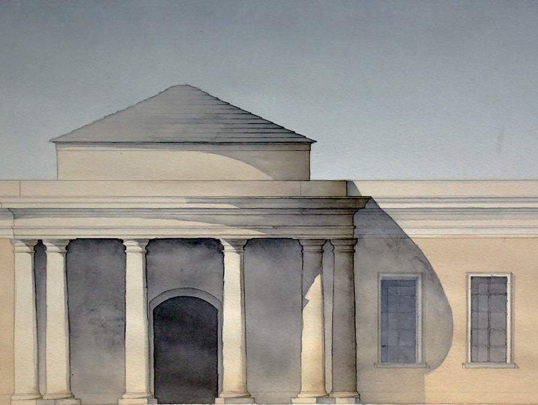
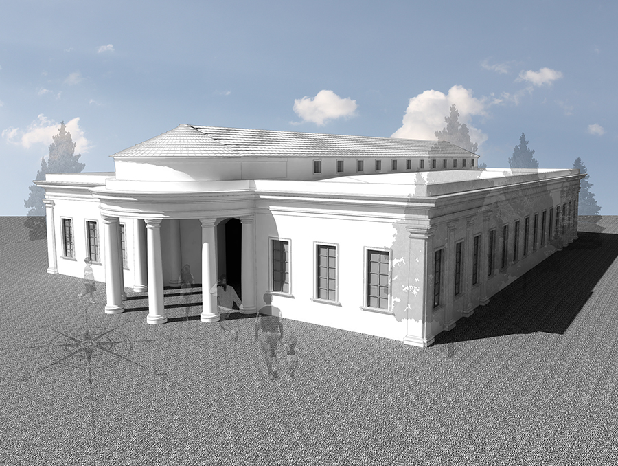

- 1
- 2
- 3
- 4
- 

- 

Three Teacher School
Boston, MA, USA
Prof. Richard John
Classical architecture usually denotes architecture which is more or less consciously derived from the principles of Greek and Roman architecture of classical antiquity, or sometimes even more specifically, from the works of Vitruvius. Different styles of classical architecture have arguably existed since the Carolingian Renaissance, and prominently since the Italian Renaissance. Although classical styles of architecture can vary greatly, they can in general all be said to draw on a common "vocabulary" of decorative and constructive elements. In much of the Western world, different classical architectural styles have dominated the history of architecture from the Renaissance until the second world war, though it continues to inform many architects to this day.